수질환경기사 (2011-03-20 기출문제)
1과목: 수질오염개론
1. 기압 760mmHg의 대기에 노출된 10℃의 순수 중의 산소포화농도(mg/L)는? (단, CS=Ksㆍp, 10℃에서 산소의 Ks=38.4mL/L, 포화수증기압(pw)=9.21mmHg, 공기 중 산소함유율은 21% 이다.)
- 약 9mg/L
- 약 10mg/L
- 약 11mg/L
- 약 12mg/L
(정답률: 48%)

2. 유량 30,000m3/d, BOD 1mg/L인 하천에 유량 100m3/h, BOD 220mg/L의 생활오수가 처리되지 않고 유입되고 있다. 하천수와 처리수가 합류 직후 완전 혼합 된다고 가정할 때, 하천의 BOD를 3mg/L로 유지하기 위해서 필요한 오수의 BOD 제거율(%)은?
- 85.2
- 87.3
- 92.4
- 95.5
(정답률: 48%)
3. 물의 일반적인 성질에 관한 설명으로 옳지 않은 것은?
- 물의 밀도는 수온, 압력에 따라 달라진다.
- 물의 점성은 수온증가에 따라 증가한다.
- 물의 표면장력은 수온증가에 따라 감소한다.
- 물의 온도가 증가하면 포화증기압도 증가한다.
(정답률: 81%)
4. 농업용수의 수질을 논할 때 가장 많이 사용되는 척도는 SAR(sodium adsorption rate)이다. 그 값이 8인 경우 흙에 미치는 영향으로 가장 적합한 것은?
- 흙에 미치는 영향이 적은 편이다.
- 흙에 미치는 영향이 상당한 편이다.
- 흙에 미치는 영향이 비교적 높은 편이다.
- 흙에 미치는 영향이 매우 높은 편이다.
(정답률: 78%)
5. 어느 폐수의 사료를 분석한 결과가 다음과 같다면 NBDICOD(Non-biodegradable insoluble COD) 농도(mg/L)는? (단, K(BODu/BOD5)는 1.72를 적용할 것)
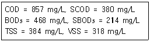
- 24.68
- 32.56
- 40.12
- 52.04
(정답률: 40%)
6. 석회수용액(Ca(OH)z) 100mL를 중화시키는데 0.03N HCl 25mL가 소요되었다면 이 석회수용액의 경도는? (단, 단위:CaCO3 mg/L)
- 345
- 375
- 415
- 455
(정답률: 58%)
7. 에탄올(C2H5OH) 150mg/L가 함유된 폐수의 이론적 COD 값은? (단, 기타 오염물질은 고려하지 않음)
- 313mg/L
- 353mg/L
- 423mg/L
- 453mg/L
(정답률: 60%)
8. 다음 중 수은(Hg) 중독과 관련이 없는 것은?
- 난청, 언어장애, 구심성 시아협착, 정신장애를 일으킨다.
- 이따이이따이병을 유발한다.
- 유기수은은 무기수은 보다 독성이 강하며 신경계통에 장해를 준다.
- 무기수은은 황화물 침전법, 활성탄 흡착법, 이온교환법 등으로 처리할 수 있다.
(정답률: 75%)
9. 해수의 특성으로 옳지 않은 것은?
- 해수의 pH는 약 8.2 정도이며 염분은 극지방에 비하여 적도 부근에서 높다.
- 해수의 밀도는 염분, 수은, 수압의 함수로 수심이 깊을수록 증가한다.
- 해수 내 전체질소 중 약 35% 정도는 암모니아성 질소와 유기 질소의 형태이다.
- 해수의 Ca/Mg 비는 3~4 정도로 담수에 비하여 크다.
(정답률: 52%)
10. 다음의 기체 법칙 중 옳은 것은?
- Boyle의 법칙:일정한 온도에서 기체의 부피틑 그 압력에 반비례한다.
- Henry의 법칙:기체가 관련된 화학반응에서는 반응하는 기체와 생성되는 기체의 부피 사이에 정수관계가 있다.
- Graham의 법칙:기체의 확산속도(조그마한 구멍을 통한 기체의 탈출)는 기체 분자량의제곱근에 비례 한다.
- Gay-Lussac의 결합 부피 법칙:혼합 기체 내의 각 기체의 부분압력은 혼합물 속의 기체의 양에 비례한다.
(정답률: 56%)
11. Mg(OH)2 464 mg/L용액의 pH는? (단, Mg(OH)2는 완전해리 하며, M.W=58)
- 11.6
- 11.9
- 12.2
- 12.5
(정답률: 47%)
12. 곰팡이(Fungi)류의 경험적 화학 분자식으로 가장 옳은 것은?
- C12H7O4N
- C12H8O5N
- C10H17O6N
- C10H18O4N
(정답률: 79%)
13. 하수에 유입된 어떤 유해 물질을 제거하기 위해 사전에 pH5에서 pH7까지 올려야 한다면 다른 영향이 없고 계산대로 반응할 경우 공업용 수산화나트륨(순도 95%)을 하수 1ℓ에 몇 g 정도 투입하여야 하는가? (단, 완전전리 기준, Na=23)
- 0.42g
- 0.042g
- 0.0042g
- 0.00042
(정답률: 33%)
14. 다음과 같은 특징을 나타내는 하천 모델링 종류로 가장 알맞은 것은?
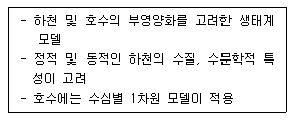
- WASP
- DO-Sag
- QUAL-I
- WQRRS
(정답률: 72%)
15. 산과 염기의 정의에 관한 설명으로 옳지 않은 것은?
- Arrhenius는 수용액에서 수산화이온을 내어 놓는 물질을 염기라고 정의하였다.
- Lewis는 전자쌍을 받는 화학종을 염기라고 정의하였다.
- Arrhenius는 수용액에서 양성자를 내어 놓는 것을 산이라고 정의하였다.
- Bronsted-Lowry는 수용액에서 양성자를 내어주는 물질을 산이라고 정의하였다.
(정답률: 61%)
16. 시료의 BOD5가 100mg/L이고 탈산소계수값은 0.15/day(밑수는 10)이면 이 시료의 최종 BOD는?
- 112 mg/L
- 122 mg/L
- 132 mg/L
- 142 mg/L
(정답률: 63%)
17. 하천의 생태변화과정 중 β-중부수성 수역에 관한 설명으로 가장 거리가 먼 것은? (단, Kolkwitz와 Marson의 4지대 구분 기준)
- 식물:규조, 녹조 등 많은 종류의 조류가 출현한다.
- 생식생물의 생태학적 특징:pH와 산소의 변동에 약하다.(부패독에 비교적 약함)
- 수중의 유기물:지방산의 암모니아 화합물이 많다.
- 분류:상당히 오염된 수역으로 수질도에 노란색으로 표시한다.
(정답률: 52%)
18. 최종 BOD가 20mg/L, DO가 5mg/L인 하천의 상류지점으로 부터 6일 유해 거리의 하류지점에서의 DO농도(mg/L)는? (단, 온도 변화는 없으며 DO 포화농도는 9mg/L이고, 탈산소계수는 0.1/day, 재폭기계수는 0.2/day, 상용대수 기준임)
- 약 4.0
- 약 4.5
- 약 5.0
- 약 5.5
(정답률: 39%)
19. 글루코스 (C6H12O6) 270g을 35℃ 혐기성 소화조에서 완전 분해시킬 때 얼마의 메탄가스가 발생 가능한가? (단, 메탄가스는 1기압, 35℃로 발생된다고 가정함)
- 약 114L
- 약 134L
- 약 154L
- 약 174L
(정답률: 48%)
20. 특정의 반응물을 포함한 유체가 CFSTR을 통과할 때 반응물의 농도가 100mg/L에서 20mg/L로 감소하였고, 반응기 내의 반응이 일차반응이며 유체의 유량이 1000m3/day이라면, 반응기의 체적(m3)은? (단, 반응속도상수는 0.5day-1)
- 8000m3
- 10000m3
- 12000m3
- 14000m3
(정답률: 46%)
2과목: 상하수도계획
21. 복류수나 자유수면을 갖는 지하수를 취수하는 시설인 집수매거에 관한 설명으로 옳지 않은 것은?
- 집수매거의 길이는 시험우물 등에 의한 양수 시험 결과에 따라 정한다.
- 집수매거의 매설깊이는 1.0m 이하로 한다.
- 집수매거는 수평 또는 흐름방향으로 향하여 완경사로 하고 집수매거의 유출단에서 매거내의 평균유속은 1.0m/s 이하로 한다.
- 세굴의 우려가 있는 제외지에 설치할 경우에는 철근콘크리트를 등으로 방호한다.
(정답률: 56%)
22. 상수시설인 정수지에 관한 설명으로 옳지 않은 것은?
- 정수지의 유효수심은 3~6m를 표준으로 한다.
- 정수지 상부는 개방하여 정수 정도를 파악할 수 있도록 한다.
- 정수지 바닥은 저수위보가 15cm이상 낮게 해야 한다.
- 고수위로부터 정수지 상부 슬래브가지는 30cm 이상의 여유고를 가져야 한다.
(정답률: 38%)
23. 상수시설인 침사지에 관한 설명으로 옳지 않은 것은?
- 지내 유효수심은 2~3m로 하며 퇴사심도는 0.5m 미만으로 한다.
- 지의 상단 높이는 고수위보다 0.6~1m 의 여유고를 둔다.
- 표면부하율은 200~500mm/min을 표준으로 하며 지의 길이는 폭의 3~8배를 표준으로 한다.
- 지내평균유속은2~7cm/sec를 표준으로 한다.
(정답률: 50%)
24. 표준활성슬러지법의 운영 및 설계조건으로 옳지 않은 것은?
- MLSS농도(mg/L):1500~2500
- HRT(hr):6~8
- SRT(day):3~6
- 반응조 수심(m):3~4
(정답률: 33%)
25. 하수도시설인 일차침전지의 시설기준에 관한 설명으로 옳지 않은 것은?
- 표면부하율은 계획1일최대오수량에 대하여 분류식의 경우 35~70m3/m2.일 로 한다.
- 슬러지수집기를 설치하는 경우의 침전지 바닥 기울기는 직사각형에서는 1/100~2/100으로 한다.
- 침전시간은 계획1일최대오수량에 대하여 표면부하율과 유효수심을 고려하여 정하며, 일반적으로2~4시간으로 한다.
- 유효수심은 3~6m를 표준으로 한다.
(정답률: 14%)
26. 상수시설인 취수시설(지표수인 하천수를 수원으로 하는 경우) 중 안정된 취수와 침사효과가 큰 것이 특징이며 개발이 진행된 하천 등에서 정확한 취수조정이 필요한 경우, 대량취수 할 때, 하천의 흐름이 불안정한 경우 등에 가장 적합한 것은?
- 취수탑
- 취수문
- 취수관거
- 취수보
(정답률: 55%)
27. 도수시설에 관한 설명으로 가장 적합한 것은?
- 정수장으로부터 배수시설까지 상수를 끌어들이는 시설
- 원수를 취수시설까지 끌어들이는 시설
- 취수시설에서 취수된 원수를 정수시설까지 끌어들이는 시설
- 배수시설로부터 급수지까지 상수를 끌어들이는 시설
(정답률: 58%)
28. 상수도관(금속관)의 자연부식 중 매크로셀 부식으로 분류되는 것은?
- 산소농담(통기차)
- 박테리아 부식
- 간섭
- 특수토양부식
(정답률: 64%)
29. 상수시설인 착수정의 체류시간, 수심 기준으로 옳은 것은?
- 체류시간:1.5분 이상, 수심:2~3m 정도
- 체류시간:1.5분 이상, 수심:3~5m 정도
- 체류시간:3.0분 이상, 수심:2~3m 정도
- 체류시간:3.0분 이상, 수심:3~5m 정도
(정답률: 62%)
30. 하수의 배제방식 중 분류식(합류식과 비교)에 대한 설명으로 옳지 않은 것은?
- 우천시의 월류:일정량 이상이 되면 우천시 오수가 월류한다.
- 처리장으로의 토사유입:토사의 유입이 있지만 합류식 정도는 아니다.
- 관거오접:철저한 감시가 필요하다.
- 관거내 퇴적:관거내의 퇴적이 적으며 수세효과는 기대 할 수 없다.
(정답률: 51%)
31. 상수도의 펌프계에서 발생하는 수격작용(water hammer)의 방지 대책으로 가장 거리가 먼 것은?
- 펌프에 플라이휠을 붙인다.
- 토출측 관로에 표준형 조압수조를 설치한다.
- 흡입측 관로에 양방향형 조압수조를 설치한다.
- 압력수조를 설치한다.
(정답률: 59%)
32. 상수도관의 관종을 선정할 때 고려하여야 하는 기본사항과 가장 거리가 먼 것은?
- 관 재질에 의하여 물이 오염될 우려가 없어야 한다.
- 내압과 외압에 대하여 안전해야 하며 매설조건에 적합해야 한다.
- 통수능력 감소에 따른 내용년수를 고려해야 한다.
- 매설환경에 적합한 시공성을 지녀야 한다.
(정답률: 69%)
33. 직경이 60cm인 원형 관로에 물이 1/2 정도 차서 흐르고 있다. 이 관수로의 경심은?
- 25cm
- 20cm
- 15cm
- 10cm
(정답률: 70%)
34. 다음은 상수시설인 배수지의 용량에 관한 내용이다. ( )안에 옳은 내용은?
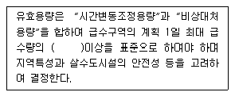
- 6시간분
- 8시간분
- 10시간분
- 12시간분
(정답률: 62%)
35. 해수담수화방식 중 상(HI)변화방식인 증발법에 해당되는 것은?
- 다단플래쉬법
- 냉동법
- 가스수화물법
- 전기투석법
(정답률: 41%)
36. 상수도시설인 급속여과지에 관한 내용으로 옳지 않은 것은?
- 여과속도는 단층의 경우 120~150m/d를 표준으로 한다.
- 여과지 1지의 여과면적은 120m2 이하로 한다.
- 여과면적은 계획정수량을 여과속도로 나누어 계산한다.
- 급속여과지는 중력식과 압력식이 있으며 중력식을 표준으로 한다.
(정답률: 58%)
37. 상수의 송수시설에 관한 설명으로 옳지 않은 것은?
- 송수시설의 계획송수량은 원칙적으로 계획1일최대 급수량을 기준으로 한다.
- 송수를 개수로로 할 경우에는 삼각 또는 직각 위어를 설치한다.
- 송수시설은 정수장에서 배수지까지 송수하는 시설이다.
- 송수방식은 자연유하식, 펌프가압식 및 병용식이 있다.
(정답률: 36%)
38. 접촉산화법의 특징 및 장단점에 관한 내용으로 옳지 않은 것은?
- 무착생물량을 임위로 조정하기 어려워 조작조건의 변경에 대응하기가 용이하지 않다.
- 슬러지의 자산화가 기대어 잉여슬러지량이 감소한다.
- 반응조내 매체를 균일하게 포기 교반하는 조건설정이 어렵고 사수부가 발생할 우려가 있다.
- 반송슬러지가 필요하지 않으므로 운전관리가 용이하다.
(정답률: 53%)
39. 하수슬러지 탈수를 위한 원심탈수기에 관한 내용으로 옳지 않은 것은? (단, 벨트프레스 탈수기, 가압탈수기 비교 기준)
- 세척수 : 적다
- 부대장치 : 많다
- 소모품 : 적다
- 소요동력 : 많다
(정답률: 50%)
40. 수돗물의 부식성 관련 지표인 랑게리아지수(포화지수, LI)의 계산식으로 옳은 것은? (단, pH:물의 실제 pH, pHs:수중의 탄산칼슘이 용해되거나 석출되지 않는 평형상태로 있을 때의 pH)
- LI=pH+pHs
- LI=pH-pHs
- LI=pH×pHs
- LI=pH/pHs
(정답률: 66%)
3과목: 수질오염방지기술
41. 암모니아성 질소를 함유한 폐수를 생물학적으로 처리하기 위해 질산화-탈질화 공정을 채택하여 운영하였다. 생물학적 질소제거와 관련된 설명으로 옳지 않은 것은?
- 질산화에 관여하는 미생물은 독립영양미생물이고 탈질화에 관여하는 미생물은 종속영양미생물이다.
- 질산화 과정에서의 pH는 감소하고, 탈질화 과정에서의 pH는 증가한다.
- 질산화 과정에서 유기물의 첨가를 위해 메탄올을 주입한다.
- 질산화는 호기성상태에서 이루어지며, 탈질화는 무산소상태에서 이루어진다.
(정답률: 42%)
42. 생물학적으로 처리가 어려운(NBD)COD를 제거하기 위하여 흡착제로 활성탕(AC)을 사용하였는데 Freundlich 등온 흡착공식이 잘 적용되었다. 증 COD가 56mg/L인 원수에 활성탄을 20mg/L 주입시켰더니 COD가 16mg/L로 되었고, 52mg/L를 주입시켰더니 COD가 4mg/L로 되었다. COD를 8mg/L로 되기 위해서는 활성탄을 얼마나 주입시켜야 하는가?
- 약 34 mg/L
- 약 37 mg/L
- 약 41 mg/L
- 약 46 mg/L
(정답률: 20%)
43. 혐기성 처리시 메탄의 최대 수율을 기준으로 액상으로 부터 제거된 기질이 5.0kg일 때의 메탄생성량은? (단, 표준상태 기준)
- 0.85m3 CH4
- 1.75m3 CH4
- 2.65m3 CH4
- 3.35m3 CH4
(정답률: 32%)
44. 활성슬러지조로의 폐수 유입량이 하루 1500m3이고, 슬러지의 SVI는 80이며, 1L메스실린더에 슬러지 1L를 취하여 30분간 침전 후 400mL의 침전물이 발생하였다. 최종침전지에서 활성슬러지조로의 반송량은?
- 800 m3/일
- 1000 m3/일
- 1200 m3/일
- 1400 m3/일
(정답률: 28%)
45. 역삼투 막분리방법에 관한 내용과 가장 거리가 먼 것은?
- 셀룰로오스 아세테이트로 만든 막이 널리 사용되며 비교적 단단하다.
- 용질의 농도차이로 선택적 투과막을 통과한 용액내 용질을 분리시키는 것이다.
- 기본장치에 부착된 기계의 주요형태는 관형, 중공사형 나선 구조형으로 분류된다.
- 막 교환에 드는 비용은 막 공법 운영 소요 비용의 많은 부분을 차지한다.
(정답률: 41%)
46. 아래의 조건에서 탈질반응조(anoxic basin) 체류시간은?
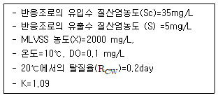
- 6.7 hr
- 5.7 hr
- 4.7 hr
- 3.7 hr
(정답률: 26%)
47. 유량이 500m3/day, SS 농도가 220mg/L인 하수가 체류시간이 2시간인 최초침전지에서 60%의 제거효율을 보였다. 이 때 발생되는 슬러지 양은? (단, 슬러지 비중은 1.0, 함수율은 98%, SS만 고려함)
- 약 4.2 m3/day
- 약 3.3 m3/day
- 약 2.4 m3/day
- 약 1.8 m3/day
(정답률: 53%)
48. BOD 농도 160mg/L, SS농도 180mg/L, BOD-슬러지부하 0.3kg BOD/kg MLSS day일 때, MLSS 농도는? (단, 폭기조 수리학적 체류시간은 6시간이다.)
- 2933 mg/L
- 2733 mg/L
- 2433 mg/L
- 2133 mg/L
(정답률: 38%)
49. 하수내 질소 및 인을 생물학적으로 처리하는 UCT 공법의 경우 다른 공법과는 달리 침전지에서 반송되는 슬러지를 혐기조로 반송하지 않고 무산소조로 반송하는 데, 그 이유로 가장 적합한 것은?
- 혐기조에 질산염의 부하를 감소시킴으로써 인의 방출을 증대시키기 위해
- 호기조에서 질산화된 질소의 일부를 잔류 유기물을 이용하여 탈질시키기 위해
- 무산소조에 유입되는 유기물 부하를 감소시켜 탈질을 증대시키기 위해
- 후속되는 호기조의 질산화를 증대시키기 위해
(정답률: 53%)
50. 하수고도처리를 위한 5단계 Bardenpho 프로세스에서 최종적으로 인이 제거되는 과정을 가장 알맞게 설명한 것은?
- 인농도가 높아진 잉여슬러지를 인발함으로써 제거한다.
- 혐기조에서 미생물의 인 방출 후, 방류하여 제거한다.
- 인농도가 높은 침전지 상등수를 응집침전시켜 제거한다.
- 무산소조에서 인이 미생물에 과잉섭취되어 제거된다.
(정답률: 43%)
51. 100mg/L의 시안함유 폐약 10m3를 알칼리 염소법으로 완전 분해하려고 한다. 이 때 필요한 이론적인 염소의 양은? (단, 반응식은 다음과 같으며 Cl원자량은 35.5이다.)
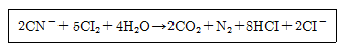
- 5.7 kg
- 6.8 kg
- 7.7 kg
- 9.6 kg
(정답률: 57%)
52. 수면부하율(또는 표면부하율)이 50m3/m2-d인 침전지에서 100% 제거될 수 있는 입자의 직경은 얼마 이상부터인가? (단, 폐수와 입자의 비중은 각각 1.0과 1.35이며 폐수의 점섬계수는 0.098kg/mㆍs이고, 입자의 침전은 stokes 공식을 따른다.)
- 0.28mm 이상
- 0.35mm 이상
- 0.43mm 이상
- 0.55mm 이상
(정답률: 25%)
53. 회분식 반응조를 일차반응의 조건으로 설계하고, A성분의 제거 또는 전환율이 90%가 되게 하고자 한다. 만일, 반응 속도상수 k가 0.40/hr 이면 이 회분식 반응조의 체류시간은?
- 약 4.7hr
- 약 5.8hr
- 약 6.4hr
- 약 7.3hr
(정답률: 61%)
54. 회전 생물막 접촉판법은 일반적으로 2~4개의 조를 직렬 배치하여 적용하는 경우가 많은데 첫째조에서 최종조로 폐수가 이전됨에 따라 관찰되는 현상과 거리가 먼 것은?
- 용존산소의 농도는 점차 감소한다.
- 최종조로 갈수록 난분해성 기질이 잔류한다.
- 회전판 표면의 생물막의 두께가 얇아진다.
- 각 조에서의 원판사이의 간격은 첫째조에서 상대적으로 가장 넓게 조절한다.
(정답률: 41%)
55. 포기조 내의 MLSS를 2250mg/L로 유지하기 위해 필요한 슬러지의 반송비는? (단, 유입하수 SS 농도 150mg/L, 반송슬러지 SS 농도 9250mg/L, 기타조건은 고려하지 않음)
- 50%
- 40%
- 30%
- 20%
(정답률: 45%)
56. 다음 중 화학 흡착에 관한 설명으로 가장 적합한 것은?
- 흡착된 물질이 흡착제 표면을 자유로이 이동한다.
- 분자 사이의 인력에 의한 것이며 이온 교환이 여기에 속한다.
- 흡착된 물질이 흡착제 표면에 한 분자 두께의 층을 형성한다.
- 일반적으로 가역적인 반응 특성이 있다.
(정답률: 44%)
57. 다음 조건하에서 Monod 식(Michaelis-Menten식 이용)을 적용한 세포의 비증식속도(Specific growth rate)는? (단, 제한기질농도 200mg/ℓ, 1/2포화농도(Ks) 50mg/ℓ, 세포의 비증식속도 최대치 0.1hr-1)
- 0.08hr-1
- 0.12hr-1
- 0.16hr-1
- 0.24hr-1
(정답률: 51%)
58. 함수율 95%인 생분뇨가 분뇨처리장에 100m3/day의 율로 투입되고 있다. 이 분뇨에는 휘발성 고형물(VS)이 총 고형물(TS)의 50%이고, VS의 60%가 소화가스로 발생되었다. VS 1kg당 0.5m3의 소화가스가 발생 되었다면 분뇨의 소화가스 총발생량(m3/day)은? (단, 분뇨의 비중은 1로 한다.)
- 650 m3/day
- 750 m3/day
- 850 m3/day
- 950 m3/day
(정답률: 45%)
59. 염소의 살균력에 대한 설명으로 옳지 않은 것은?
- 살균강도는 HOCl ＞ OCl - 이다.
- 염소의 살균력은 반응시간이 길고 온도가 높을 때 강하다.
- 염소의 살균력은 주입농도가 높고 pH가 낮을 때 강하다.
- Chloramlnes은 살균력은 강하나 살균작용은 오래 지속되지 않는다.
(정답률: 61%)
60. 역삼투 장치로 하루에 500m3의 3차 처리된 유출수를 탈염시키고자 한다. 요구되는 막면적(m2)은?
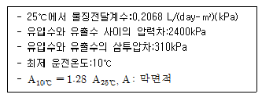
- 약 1230
- 약 1480
- 약 1630
- 약 1830
(정답률: 61%)
4과목: 수질오염공정시험기준
61. 부유물질(유리섬유 거름종이법)의 정량점위는?
- 1mg 이상
- 5mg 이상
- 10mg 이상
- 25mg 이상
(정답률: 43%)
62. 다음은 원자흡광광도법을 이용하여 셀레늄을 측정하는 원리이다. ( )안에 내용으로 옳은 것은?(오류 신고가 접수된 문제입니다. 반드시 정답과 해설을 확인하시기 바랍니다.)
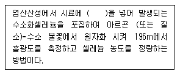
- 셀레늄
- 아연분말
- 염화제일주석
- 염화메틸수은
(정답률: 38%)
63. 실험의 일반적 총칙에 관한 설명으로 옳지 않은 것은?
- 용액의 농도를 “%”로만 표시할 때는 W/V%를 말한다.
- 찬 곳을 따로 규정이 없는 한 0~15℃의 곳을 뜻한다.
- 방울수라 함은 0℃에서 정제수 10방울을 적하할 때, 그 부피가 약 1mL 되는 것을 뜻한다.
- “정확히 취하여”라 함은 규정된 양의 시료를 홀피펫으로 눈금까지 취하는 것을 말한다.
(정답률: 60%)
64. 수질오염공정시험기준 총칙에 관한 설명으로 옳지 않은 것은?
- 분석용 저울은 0.1mg까지 달 수 있는 것이어야 한다.
- 유효측정 농도는 지정된 시험방법에 따라 시험하였을 경우 그 시험방법에 대한 최소 정량 한계를 의미하며, 그 미만은 불검출된 것으로 간주한다.
- 정량범위라 함은 본 시험방법에 따라 시험할 경우 표준 편차율 10% 이하에서 측정할 수 있는 정량하한과 정량상한의 범위를 말한다.
- 표준편차율이라 함은 표준편차를 실험회수(n)로 나눈값의 백분율이다.
(정답률: 42%)
65. 금속 필라멘트 또는 전기저항체를 검출소자로 하여 금속판 안에 들어 있는 본체와여기에 안정된 직류전기를 공급하는 전원회로, 전류 조절부, 신호검출 전기회로, 신호감쇄부 등으로 구성된 가스크로마토그래피 검출기는?
- TCD
- FID
- ECD
- FPD
(정답률: 31%)
66. 다음음 흡광광도법을 이용하여 아연을 측정하는 원리이다. ( )안에 옳은 내용은?
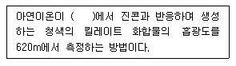
- pH 약 2
- pH 약 4
- pH 약 9
- pH 약 11
(정답률: 66%)
67. 투과율법을 이용한 색도 측정에 관한 내용으로 옳지 않은 것은?
- 시각적으로 눈에 보이는 색상과 색도차를 계산하는데 링겔만-니컬슨의 색도공식을 근거로 한다.
- 백금-코발트 표준물질과 아주 다른 색상의 폐수ㆍ하수에 작용할 수 있다.
- 백금-코발트 표준물질과 비슷한 색상의 폐수ㆍ하수에 적용할 수 있다.
- 시료 중의 부유물질은 제거하여야 한다.
(정답률: 31%)
68. 수질오염공정시험기준상 음이온 계면활성제 실험방법으로 옳은 것은?(오류 신고가 접수된 문제입니다. 반드시 정답과 해설을 확인하시기 바랍니다.)
- 흡광광도법
- 원자흡광광도법
- 가스크로마토그래프법
- 이온전극법
(정답률: 18%)
69. 다음 중 시료의 전처리 방법으로 가장 거리가 먼 것은?
- 불화수소산 - 과염소산에 의한 분해
- 원자흡광광도법을 위한 용매추출법
- 마이트로파에 의한 유기물 분해
- 질산 - 황산에 의핸 분해
(정답률: 35%)
70. 다음은 가스크로마토그래프법을 이용한 알킬수은 측정원리이다. ( )안의 내용으로 옳은 것은?
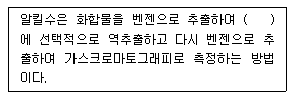
- L-시스테인용액
- 루골용액
- 사염화탄소용액
- 과산화수소용액
(정답률: 65%)
71. 총 유기탄소 측정시 적용되는 용어정의로 옳지 않은 것은?
- 비정화성 유기탄소: 총 탄소 중 pH2 이하에서 포기에 의해 정화 되지 않는 탄소를 말한다.
- 부유성 유기탄소: 총 유기탄소 중 공극 0.45μm의 막 여지를 통과하는 유기탄소를 말한다.
- 무기성 탄소: 수중에 탄산염, 중탄산염, 용존 이산화탄소 등 무기적으로 결합된 탄소의 합을 말한다.
- 총 탄소: 수중에서 존재하는 유기적 또는 무기적으로 결합된 탄소의 합을 말한다.
(정답률: 36%)
72. 원자흡관 분석에 사용되는 불꽃을 만들기 위해 조합된 가연성가스와 조연성가스의 특징을 설명한 것으로 옳지 않은 것은?
- 아세틸렌-공기: 거의 대부분의 원소 분석에 유효하게 사용된다.
- 아세틸렌-이산화질소: 불꽃의 온도가 높기 때문에 불꽃 중에서 해리하기 어려운 내화성산화물을 만들기 쉬운 원소의 분석에 적당하다.
- 수소-공기: 원자외 영역에서의 불꽃자체 흡수가 많아 넓은 파장영역으 분석선을 갖는 우너소으 분석에 적당하다.
- 프로판-공기: 불꽃온도가 낮고 일부 원소에 대하여 높은 강도를 나타낸다.
(정답률: 32%)
73. 이온 전극법의 특성에 관한 설명으로 옳지 않은 것은?
- 이온농도 측정범위는 10-1mol/L~10-4mol/L(또는 10-7mol/L)이다.
- 이온전극은 일반적으로 염화은전극(칼로멜전극)을 사용한다.
- 검량선 작성시의 표준액의 온도와 시료용액의 온도는 같아야 한다.
- 시료용액의 교반은 측정에 방해되지 않는 범위 내에서 세게 일정한 속도로 해야 한다.
(정답률: 38%)
74. 다음은 노말헥산추출물질 측정을 위한 시험방법이다. ( )안에 내용으로 옳은 것은?
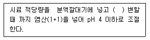
- 메틸오렌지용액(0.1W/V%) 2~3 방울을 넣고 황색이 적색 으로
- 메틸오렌지용액(0.1W/V%) 2~3 방울을 넣고 적색이 황색 으로
- 메틸레드용액(0.5W/V%) 2~3 방울을 넣고 황색이 적색 으로
- 메틸레드용액(0.5W/V%) 2~3 방울을 넣고 적색이 황색 으로
(정답률: 37%)
75. 다음 중 채취된 시료의 최대 보존기간이 가장 짧은 측정항목은?
- 6가 크롬
- 염소이온
- 암모니아성질소
- 총질소
(정답률: 51%)
76. 0.025N-KMnO4 2000mL를 조제하려면 KMnO4 약 몇 g을 취해야 하는가? (단, 원자량:K=39, Mn=55)
- 약 0.8
- 약 1.2
- 약 1.6
- 약 1.8
(정답률: 43%)
77. 어떤 공장 배수의 유량을 측정하기 위하여 파아샬플루움을 설치하였다. 파아샬플루움의 목의 폭W=15.2cm이고 경험에 의한 유량측정공식은 Q=0.264Ha1.1.58이며 상류부의 수위가 20cm 라면 유량은?
- 10 ℓ/sec
- 15 ℓ/sec
- 20 ℓ/sec
- 30 ℓ/sec
(정답률: 17%)
78. 다음은 이온전극법에 관한 설명이다. ( )안에 옳은 내용은?
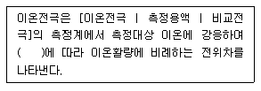
- 네론스트 식
- 패러데이 식
- 플레밍 식
- 아레니우스 식
(정답률: 50%)
79. Winkler-Azide화 나트륨 변법에 의한 DO 측정에 있어서 알칼리성 요드화칼륨-아지드화 나트륨용액의 첨가는 어떤 경우의 방해를 방지하기 위한 것인가?
- 시료가 착색, 현탁된 경우
- Fe(Ⅲ) 공존하는 경우
- 활성슬러지의 미생물의 플록이 형성된 경우
- 산화성 물질을 함유한 경우
(정답률: 14%)
80. 흡광광도 분석장치의 구성 순서로 가장 적합한 것은?
- 광원부 - 파장선택부 - 시료부 - 측광부
- 광원부 - 파장선택부 - 단색화부- 측광부
- 시료도입부 - 광원부 - 파장선택부 - 측광부
- 시료도입부 - 광원부 - 검출부 - 측광부
(정답률: 50%)
5과목: 수질환경관계법규
81. 법률상 용어의 정의로 옳지 않은 것은?
- 폐수라 함은 물에 액체성 또는 고체성의 수질오염물질이 혼입되어 그대로 사용할 수 없는 물을 말한다.
- 수질오염물질이라 함은 수질오염의 요인이 되는 물질로서 환경부령이 정하는 것을 말한다.
- 폐수무방류배출시설이라 함은 폐수배출시설에서 발생하는 폐수를 위탁하여 공공수역으로 배출하지 아니하는 시설을 말한다.
- 기타 수질 오염원이라 함은 점오염원 미 비점오염원으로 관리되지 아니하는 수질오염물질을 배출하는 시설 또는 장소로서 환경부령이 정하는 것을 말한다.
(정답률: 45%)
82. 수질 및 수생태계 환경기준 중 하천의 생활환경 기준으로 옳지 않은 것은? 9단, 등급은 매우 좋음 기준)
- 수소이온 농도(pH):6.5~8.5
- 화학적산소요구량 COD(mg/L):2 이하
- 부유물질량(mg/L):25 이하
- 총인(mg/L):0.1 이하
(정답률: 42%)
83. [환경기술인을 두어야 할 사업장의 범위 및 환경기술인의 자격기준은 ( )령으로 정한다.] ( )안에 옿은 내용은?
- 유역환경청장
- 환경부
- 대통령
- 시ㆍ도지사
(정답률: 38%)
84. 2년 6개월간 방류수수질기준을 초과하지 아니한 사업자에세 기본배출부과금 100만원이 부과된 경우 감경받는 금액은?
- 30만원
- 40만원
- 50만원
- 70만원
(정답률: 49%)
85. 공공수역에 분뇨를 버리는 행위를 한 자에 대한 벌칙 기준으로 옳은 것은?
- 1년 이하의 징역 또는 1천만원 이하의 벌금에 처함
- 2년 이하의 징역 또는 1천만원 이하의 벌금에 처함
- 3년 이하의 징역 또는 1천5백만원 이하의 벌금에 처함
- 3년 이하의 징역 또는 2천만원 이하의 벌금에 처함
(정답률: 56%)
86. 다음은 시운전 기간 등에 관한 설명이다. ( )안에 내용으로 옳은 것은?
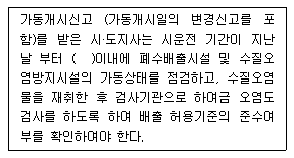
- 5일
- 10일
- 15일
- 20일
(정답률: 24%)
87. 수질오염감시경보가 [관심] 단계일 때 유역, 지방 환경청장의 조치사항과 가장 거리가 먼 것은?
- 수체변화 감시 및 원인 조사
- 수면 관리자에게 원인 조사 요청
- 관심 경보 발령 및 관계 기관 통보
- 원인 조사 및 주변 오염원 단속 강화
(정답률: 23%)
88. 수질 및 수생태계 환경기준 중 해역(등급: 참돔, 방어 및 미역 등 수산생물의 서식, 양식 및 해수욕에 적합한 수질)의 기준항목에 해당되는 것은? (단, 생활환경 기준)
- 용매추출유분
- 분원성대장균군(대장균군수/mL)
- 생물화학적산소요구량
- 부유물질량
(정답률: 28%)
89. 공공수역의 수질보전을 위하여 환경부령이 정하는 휴경등 권고대상 농경지의 해발고도 및 경사도 기준으로 옳은 것은?
- 해발 400m, 경사도 15%
- 해발 400m, 경사도 30%
- 해발 800m, 경사도 15%
- 해발 800m, 경사도 30%
(정답률: 57%)
90. 폐수처리방법이 생물화학적 처리방법으로서 12월 1일에 가동 개시한 경우 최대 허용되는 시운전기간은?
- 가동개시일로부터 50일
- 가동개시일로부터 60일
- 가동개시일로부터 70일
- 가동개시일로부터 80일
(정답률: 38%)
91. 낚시금지구역의 지정권자는?
- 환경부장관
- 시ㆍ도지사
- 시장ㆍ군수ㆍ구청장
- 국토해양부장관
(정답률: 20%)
92. 낚시금지구역 또는 낚시제한구역을 지정하고자 하는 경우 고려하여야 할 사항과 가장 거리가 먼 것은?
- 오염원 현황
- 지역별 낚시인구 현황
- 수질오염도
- 용수의 목적
(정답률: 52%)
93. 다음 중 초과부과금 산정기준 시 1킬로그램당 부과금액이 가장 높은 수질오염물질은?
- 카드뮴 및 그 화합물
- 수은 및 그 화합물
- 납 밀 그 화홥물
- 테트라클로로에틸렌
(정답률: 42%)
94. 규정에 이한 관계공무원의 출입ㆍ검사를 거부ㆍ방해 또는 기피한 폐수무방류배출시설을 설치ㆍ운영하는 사업자에게 처하는 벌칙기준은?
- 3년 이하의 징역 또는 3천만원 이하의 벌금
- 2년 이하의 징역 또는 2천만원 이하의 벌금
- 1년 이하의 징역 또는 1천만원 이하의 벌금
- 500만원 이하의 벌금
(정답률: 43%)
95. 폐수무방류배출시설의 세부 설치기준으로 옳지 않은 것은?
- 배출시설에서 분리, 지수시설로 유입하는 폐수의 관로는 육안으로 관찰할 수 있도록 설치하여야 한다.
- 폐수무방류배출시설에서 발생된 폐수를 폐수처리장으로 유입, 재처리할 수 있도록 세정식, 응축식 대기오염 방지기술 등을 설치하여야 한다.
- 폐수는 고정된 관로를 통하여 수집, 이송, 처리, 저장 되어야 한다.
- 배출시설의 처리공정도 및 폐수 배관도는 폐수처리장내 사무실에 비치하여 열람할 수 있도록 하여야 한다.
(정답률: 34%)
96. 위임업무 보고사항 중 보고횟수가 연 2회 해당되지 않는 것은?
- 기타 수질오염원 현황
- 폐수처리업에 대한 등록ㆍ지도단속실적 및 처리실적 현황
- 배출업소의 지도ㆍ점검 및 행정처분 실적
- 배출부과금 징수 실적 및 체납처분 현황
(정답률: 17%)
97. 수질오염경보(조류경보) 중 조류대발생 경보시 4대강물환경연구소장(시ㆍ도 보건환경연구원장 또는 수면관리자)의 조치사항에 대한 기준으로 가장 적합한 것은?
- 주 2회 이상 시료 채취ㆍ분석(클로로필-a, 남조류세포수, 취기, 독소)
- 주 5회 이상 시료 채취ㆍ분석(클로로필-a, 남조류세포수, 취기, 독소)
- 매일 1회 이상 시료 채취ㆍ분석(클로로필-a, 남조류세포수, 취기, 독소)
- 매일 2회 이상 시료 채취ㆍ분석(클로로필-a, 남조류세포수, 취기, 독소)
(정답률: 47%)
98. 오염총량관리기본방침에 포함되어야 하는 사항과 가장 거리가 먼 것은?
- 오염총량관리지역 현황
- 오염총량관리의 목표
- 오염원의 조사 및 오염부하량 산정방법
- 오염총량관리의 대상 수질오염물질 종류
(정답률: 47%)
99. 수질 및 수생태계 환경기준 중 하천의 ‘사람의 건강보호기준“으로 옳은 것은? (단, 단위는 mg/L)
- 벤젠: 0.03 이하
- 클로로포름: 0.08 이하
- 비소: 검출되어서는 안 됨(검출한계 0.01)
- 음이온계면활성제: 0.1 이하
(정답률: 24%)
100. 수질오염방지시설 중 물리적 처리시설에 해당되지 않는 것은?
- 혼합시설
- 흡착시설
- 응집시설
- 유수분리시설
(정답률: 45%)